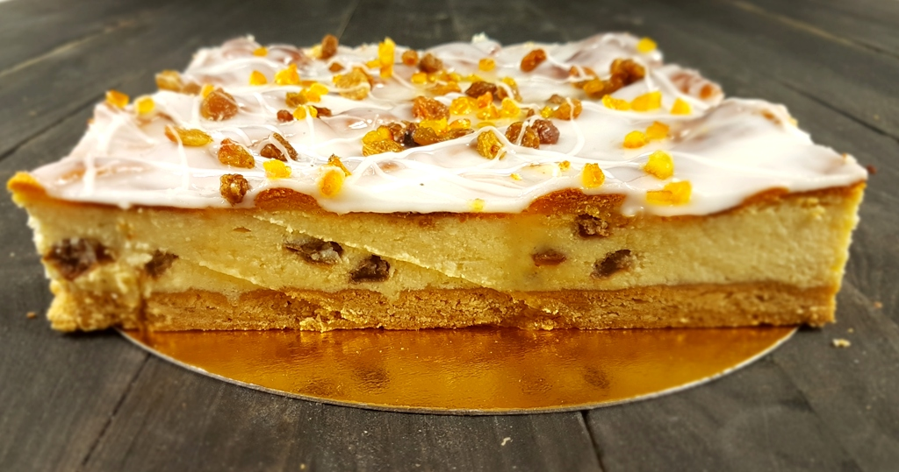
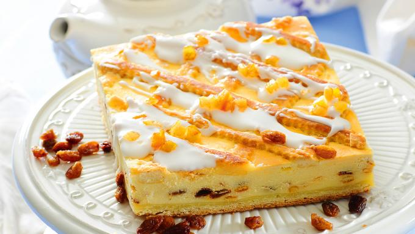

SERNIK KRAKOWSKI
Because you don't live near a bakery doesn't mean you have to go without cheescake
Hedy Lamarr
Sernik krakowski to tradycyjny polski sernik pieczony w prostokątnej formie, składający się z gęstej,
twarogowej masy serowej z bakaliami (rodzynki i skórka pomarańczowa) oraz ciasta kruchego na spodzie i wierzchu
(w postaci kratki). Cały sernik piecze się przez niecałą godzinę w 180 stopniach C i nie ma konieczności
wcześniejszego podpiekania spodu. Długo zachowuje świeżość, także można bez przeszkód zrobić go już kilka dni
przed świętami (przechowujemy w miarę chłodnym miejscu, nie musi być lodówka). Do tradycyjnego sernika należy
użyć trzykrotnie zmielonego tłustego twarogu.

SKŁADNIKI
- Ciasto kruche:
- 350 g mąki pszennej
- odrobina soli
- 1 łyżeczka proszku do pieczenia
- 1 cukier wanilinowy
- 1/2 szklanki cukru
- 170 g masła
- 1 jajko
- 2 żółtka
- Masa serowa:
- 1 kg zmielonego tłustego twarogu
- 250 g masła
- 1 i 1/2 szklanki cukru pudru
- 8 żółtek i 5 ubitych białek
- starta skórka z pomarańczy
- 50 g mąki ziemniaczanej (3 łyżki)
- bakalie (1/3 szklanki rodzynek i 4 łyżki smażonej skórki pomarańczowej)
- Lukier cytrynowy:
- sok z 1/2 cytryny
- ok. 2/3 - 1 szklanki cukru pudru

PRZYGOTOWANIE
Ciasto kruche:
- Do mąki dodać sól, proszek do pieczenia, cukier wanilinowy, cukier oraz pokrojone w kosteczkę zimne masło.
- Siekać składniki na desce lub miksować mieszadłem miksera aż powstanie drobna kruszonka.
- Dodać jajko i żółtka i połączyć składniki w gładkie i jednolite ciasto.
- Uformować kulę, spłaszczyć ją i zawinąć w folię, włożyć do lodówki na ok. 30 minut.
Masa serowa:
- Połowę żółtek ubić z połową cukru pudru. Dalej ubijając dodawać po jednym żółtku i po trochu cukru pudru.
- Ser przepuścić 3 razy przez maszynkę razem z masłem lub dokładnie razem zmiksować ser i masło.
- Ser z masłem dodawać porcjami do żółtek dokładnie miksując.
- Dodać skórkę startą z pomarańczy, mąkę ziemniaczaną, dokładnie zmiksować.
- Następnie wymieszać z bakaliami a na koniec (delikatnie mieszając) połączyć ze sztywną pianą ubitą z białek.
Lukier cytrynowy:
- Podgrzać sok z cytryny aż będzie gorący, następnie mieszać go ze stopniowo dodawanym cukrem pudrem.
- Ostudzić i polać po wystudzonym serniku.
PIECZENIE
Prostokątną formę o wymiarach 20 x 30 cm, posmarować masłem i wyłożyć papierem do pieczenia. 2/3 ciasta rozwałkować
na stolnicy podsypując mąką i wyłożyć je na spód, podziurkować go widelcem. Z reszty ciasta uformować wałeczki
obtaczając je w mące. Na spód wyłożyć masę serową, na wierzchu, na ukos położyć wałeczki tworząc kratkę. Wstawić
do piekarnika nagrzanego do 180 stopni C (góra i dół bez termoobiegu) i piec przez ok. 50 - 55 minut
na złoty kolor. Enjoy!
CIEKAWOSTKI
| Wartosci odżywcze w 100g |
| Kalorie |
289 kcal |
| Białka |
10g |
| Węglowodany |
31g |
| Tłuszcze |
14g |
| Błonnik |
0g |
- CHEESCAKE FACTORY
- Strona domowa najpopularniejszej restauracji podającej sernik!
Autor strony
Marcin Mąka
Wrocław, ul. Wrocławska 100